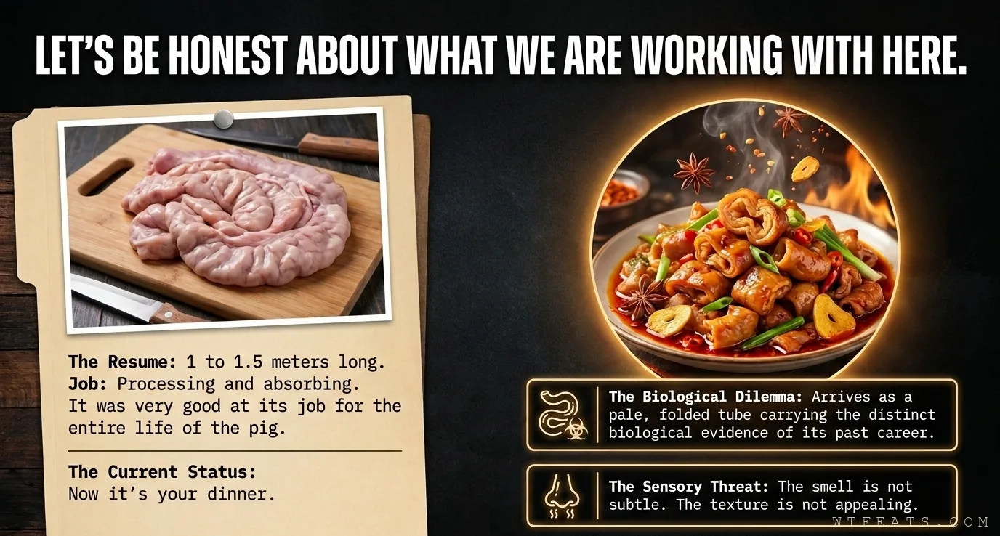

The Resume

Let's be honest about what this is.
One to one and a half meters of large intestine, folded over itself, still carrying the distinct biological evidence of its previous career. That's the resume. The biological dilemma is real — and so is the sensory threat. The smell at this stage is not subtle. The texture at this stage is not appealing. Both of those problems are fixable. That's the whole craft.